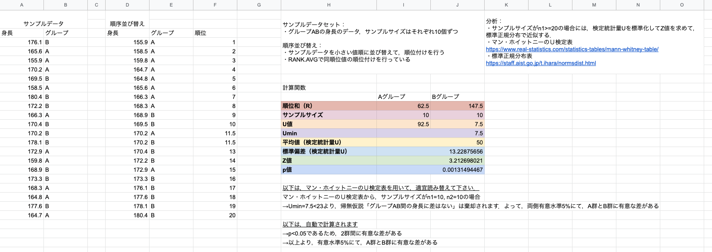

はじめに
普段は Python の SciPy というライブラリを用いて，AB テスト実施後の2群間における有意差を調べるために検定を行っていますが，Python を使っていない or このようなライブラリに触れたことがない人でも簡単に検定が行えるようにスプレッドシートを使って Mann-Whitney の U 検定を実施したものになります．
公開中のスプレッドシート → Mann-Whitney U-test in spreadsheet
コピーしてご自由にお使い下さい（全自動でない部分があるので，ご留意下さい）．
Mann-Whitney の U 検定とは
Mann-Whitney（マン・ホイットニー）の U 検定（ウィルコクソンの順位和検定）とは，2つの母集団が特定の分布であることを仮定しないで，「2つの分布の重なり具合」を検定します．（ノンパラメトリック方法の一つ）
これは，2つの母集団の中央値の差に注目しています． → こちらの記事を見ると，中央値の検定というわけではないみたいです．（自分も誤って理解していました）
U 検定の特徴としては，外れ値の影響を受けにくいなどが挙げられます．一方でよく使われる t 検定の場合，平均値を見ているので外れ値があるとその影響を受けます．そのため，外れ値除去などの対処が必要なケースが発生します．
ここで，U 検定には以下の仮定があります．
- 2つの母集団は互いに独立
- 2つの母集団の分布が正規分布であると仮定できない
- 2つの母集団のサンプルサイズが同数でなくても良い
また，帰無仮説は以下になります．
- 帰無仮説: 2群間に差がない（2つの分布が等しい）
検定を行う手順
検定を行う手順を紹介します．まずA群とB群の2つの群を考えます．
- それぞれのサンプルサイズを n1, n2 とした場合に，2つの群を混ぜたデータ (n1+n2) を用意します．
- 1のデータを昇順に並び替えます．
- 並び替えたものに対して，順位を割り当てます（ランク付け）．もし同順位を持つ要素が存在する場合は，順位の平均を計算し，その順位の平均を各要素に割り当てます．
- A 群に属するサンプルの順位和を計算する（=R1）
- 同様に B 群に属するサンプルの順位和を計算する（=R2）
ここまで計算すると，検定統計量（U値）は以下になります．
$$ U_1 = n_1n_2 + \frac{n_1(n_1 + 1)}{2} - R_1 $$ $$ U_2 = n_2n_1 + \frac{n_2(n_2 + 1)}{2} - R_2 $$ $$ U = min(U_1, U_2) $$
U が計算できたら，Mann-Whitney 検定表を用いて有意差5%で棄却できるかどうかを確認します．
α=0.05 の表を眺めて，今回のサンプルサイズ n1, n2 に該当する値と計算した U 値の大小関係を比較して，計算した値が小さい場合には，帰無仮説を棄却します，つまり有意差ありとなります．逆に計算した値の方が大きい場合には，帰無仮説を棄却できないので，有意差なしとなります．
ここで，サンプルサイズが n1>20 または n2>20 の時は，検定統計量 U を標準化してz値を求めて，標準正規分布で近似する方法を用います．平均値，標準偏差，z値は以下の計算式で求めます．
$$ \mu_u = \frac{n_1n_2}{2} $$ $$ \sigma_u = \sqrt{\frac{n_1n_2(n_1+n_2+1)}{12}} $$ $$ z = \frac{U - \mu_u}{\sigma_u} $$
z 値が計算できたら，標準正規分布表を用いて，該当するp値を見に行きます．
(z 値をスプレッドシートの組み込み関数である NORMSDIST に代入して，1から引くことで p 値を計算しています: 式=1-NORMSDIST(z))
- p≧α の時，帰無仮説を棄却できない
- p<α の時，帰無仮説を棄却する．つまり，有意差ありとなる
スプレッドシートで U 検定を行う
公開しているスプレッドシートはこちらになります．（再掲）

サンプルデータとしてグループ AB の身長のデータを載せています．こちらのデータを検定したい2群のデータに適宜変更して頂くと，#検定を行う手順 で紹介した方法に則って p 値の計算がされます．
サンプルサイズが n<=20 の場合は，U値での評価になるので，その場合はリンクにあるマン・ホイットニーの U 検定表を用いて，該当する値から検定結果を見積って貰うと良いです．
※ 補足:
サンプルデータのデータ順序は意識しないで問題ありません，順序並び替えで自動的に昇順で並び変わります．ただし，順位については，スプレッドシートのマウスオーバーでセルの右下に表示される黒い部分をデータが存在している部分まで下にズラして貰う必要があります．（スプレッドシートを完璧に使いこなしているわけではないので，特に順位をつけてる部分が自動化できていないです．もしご存知の方は，方法を教えて貰えると大変助かります🙏）
おわりに
今回は，スプレッドシートを使って Mann-Whitney の U 検定を試してみた内容になります．Python を使っていない非エンジニアの方でも検定を行えるようにスプレッドシートに実装しました．AB テストを実施して検定するまでを誰でも簡単にできるようになれば良いなと思ってます．実装していて，スプレッドシートって意外と組み込みの関数が用意されていることを改めて知ることができました😄
また，普段ライブラリを何気なく使っていますが，内部の計算方法やどうゆう手続きで出力されるのか，またその値をちゃんと理解して使っていかないとなーということを改めて感じました．例えば，scipy.stats.mannwhitneyu は p 値を出すだけであれば良いが，U 値を使いたい場合には少し使いづらいと感じました．
P.S. t 検定についてもスプレッドシートで実施できるようにしているので，また紹介したいと思います．
参考
- Mann–Whitney U test
- Mann-Whitney Table
- 標準正規分布表
- スプレッドシート - NORMSDIST
- Divine, et al. (2018) Mann-Whitney 検定は中央値の検定ではない